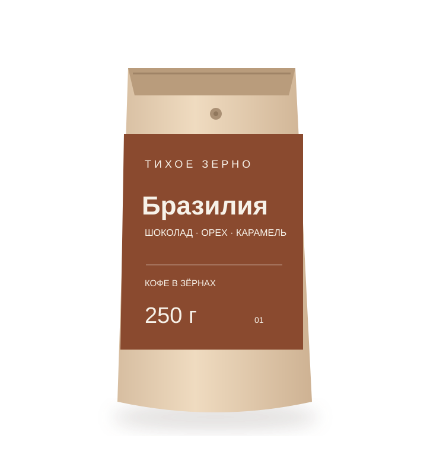
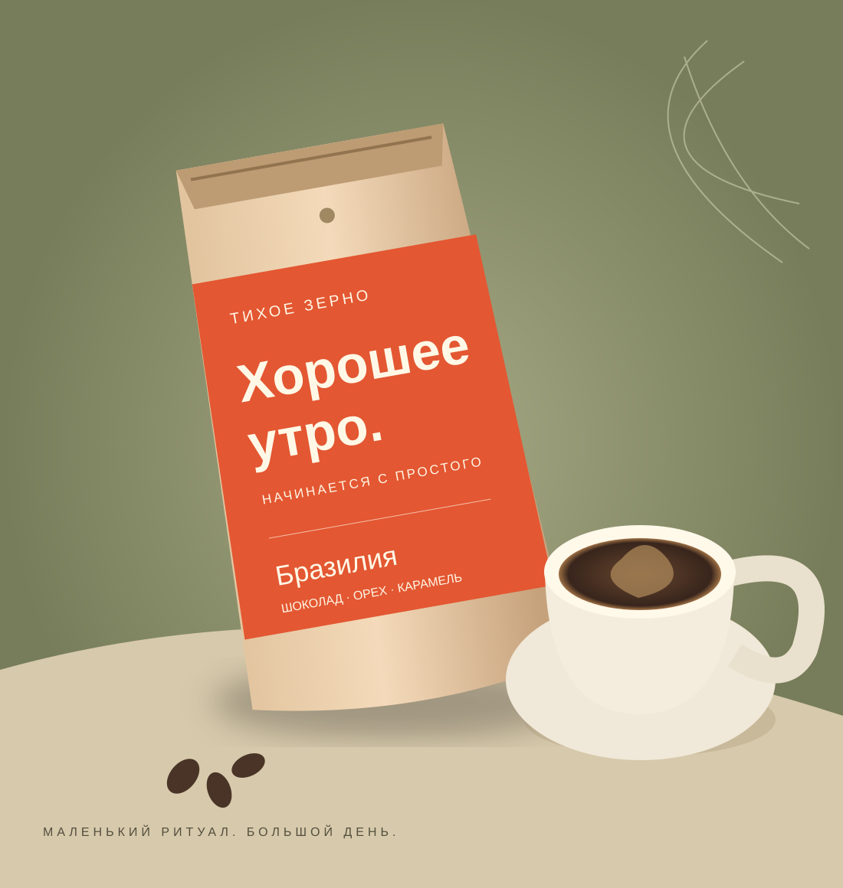
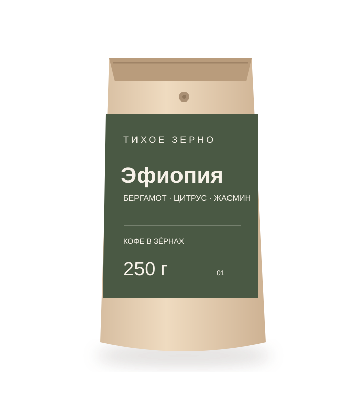

Бразилия Серрадо
Молочный шоколад, фундук и карамель
кофе в зёрнах
КОФЕ ДЛЯ ВАШИХ МАЛЕНЬКИХ РИТУАЛОВ
Необязательно разбираться в сотне сортов.
Достаточно найти вкус, с которым хочется
начать утро.
Два характера. Много способов заварить.
Один повод сделать паузу.

01 / ЗНАКОМСТВО СО ВКУСОМ
Спокойная шоколадная классика или яркая фруктовая чашка? Начните с того, что нравится именно вам.

Молочный шоколад, фундук и карамель

Бергамот, цитрус и цветочные ноты
02 / ВРЕМЯ ДЛЯ СЕБЯ
Весы, вода и несколько спокойных минут. Мы собрали понятные рецепты для воронки и френч-пресса — без барного оборудования и лишних усложнений.
Попробовать рецепт03 / НАШ ПОДХОД
Кофе может быть маленькой точкой опоры в большом дне. Нам близок подход, в котором нет правильного вкуса для всех: есть ваша чашка, ваш способ заваривания и ваше настроение.
«Тихое зерно» — учебный проект о выборе кофе и домашних ритуалах. Здесь можно сравнить два вкусовых профиля и попробовать подобрать свой.
Познакомиться с проектомНАЧНИТЕ С ЛЮБОПЫТСТВА